Welcome To The
JUNGLE


 Explore
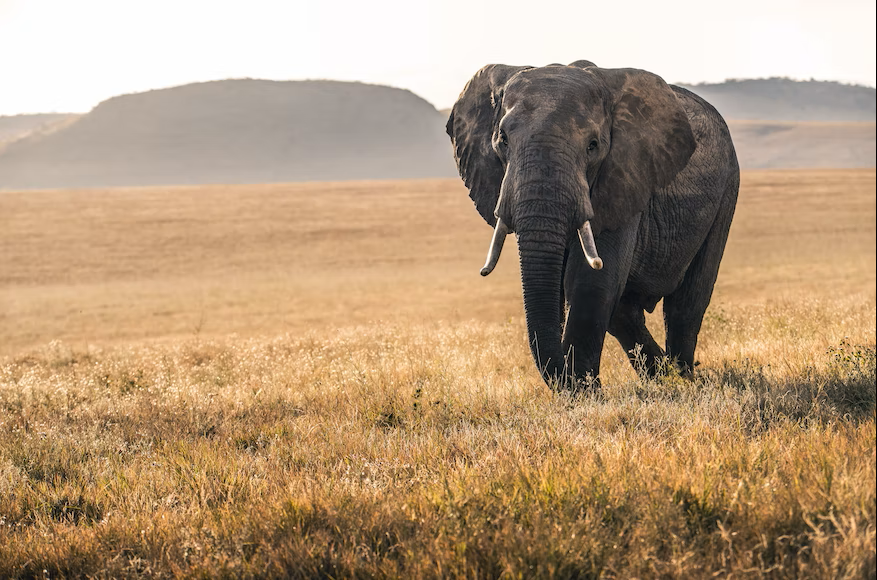
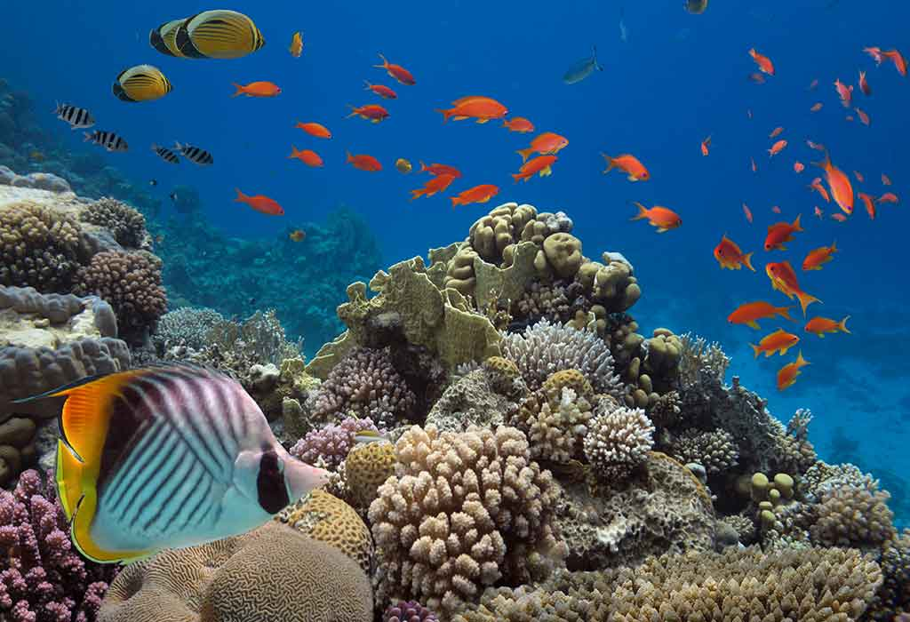
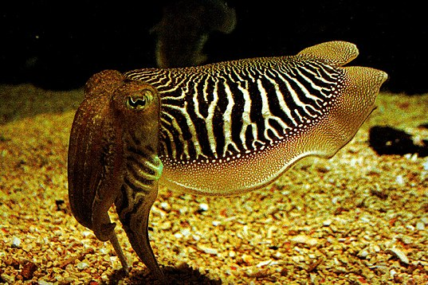
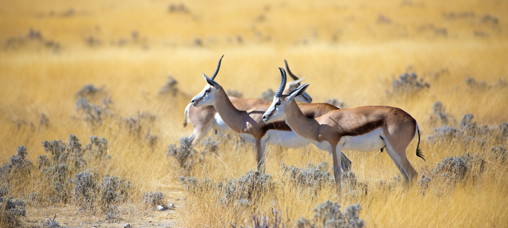
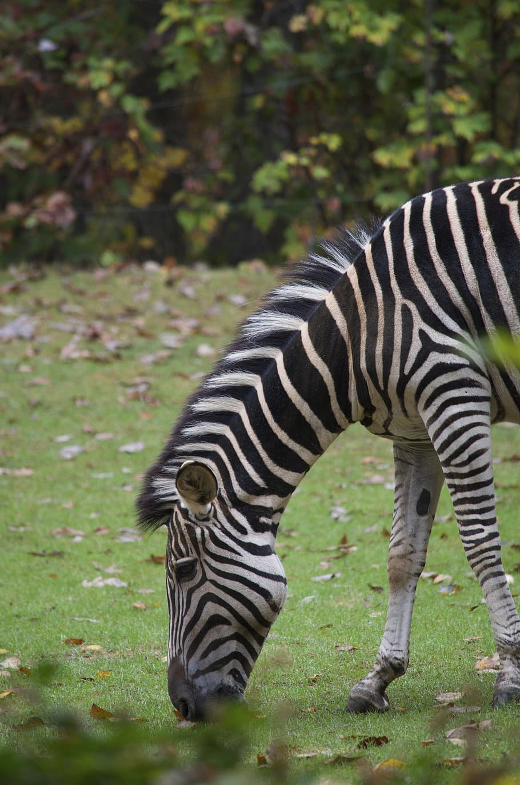
Explore
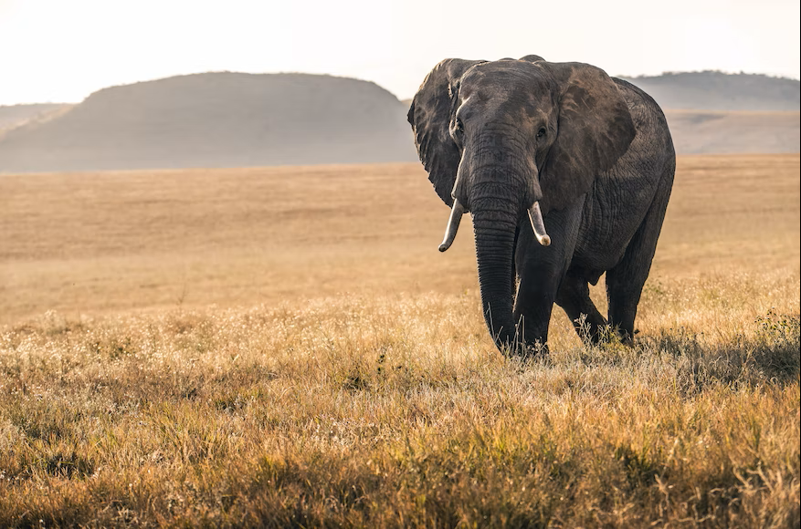
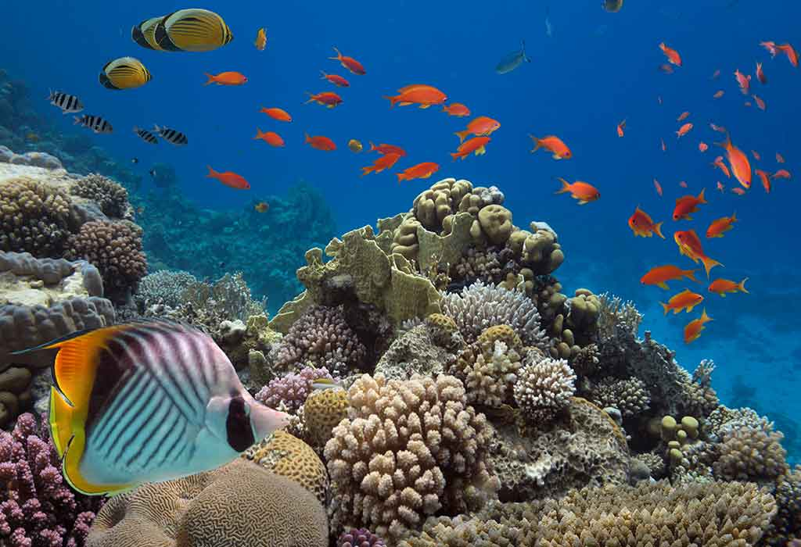
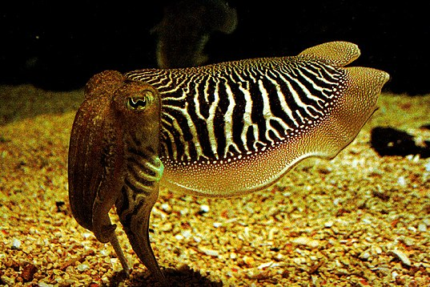
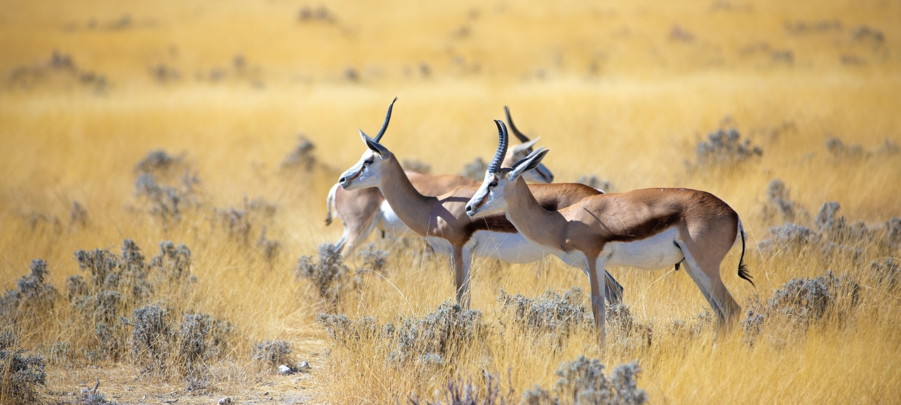
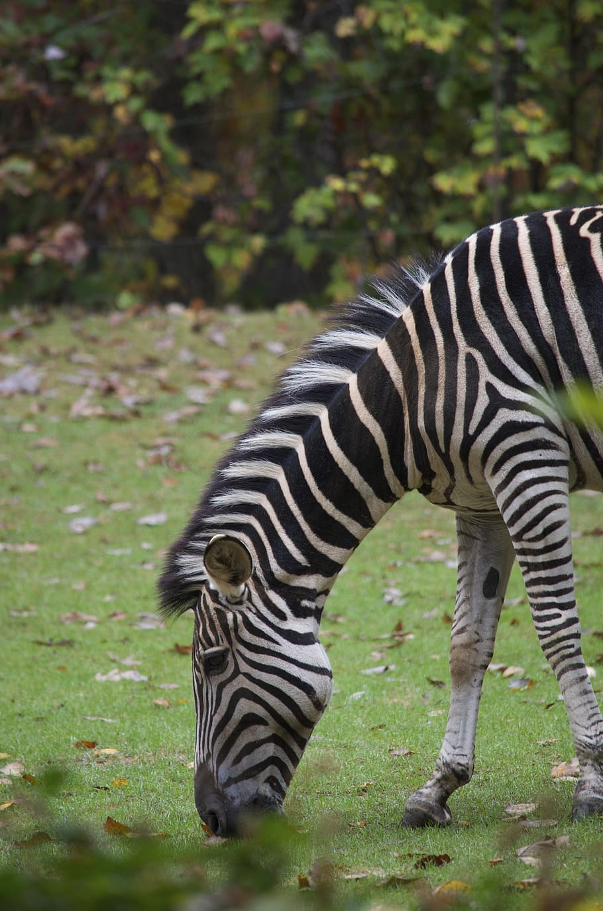
Explore
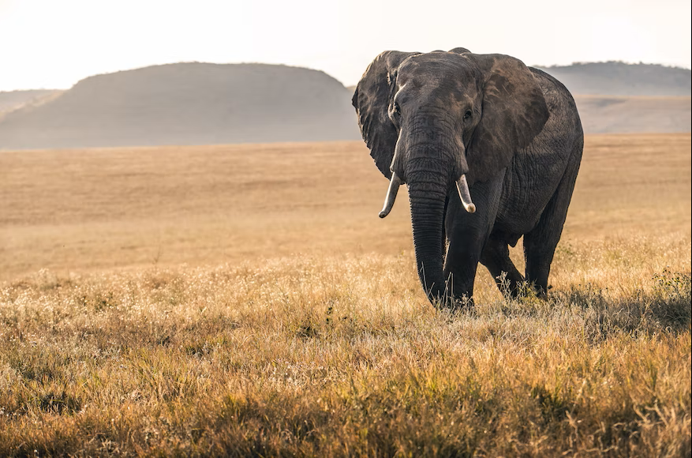
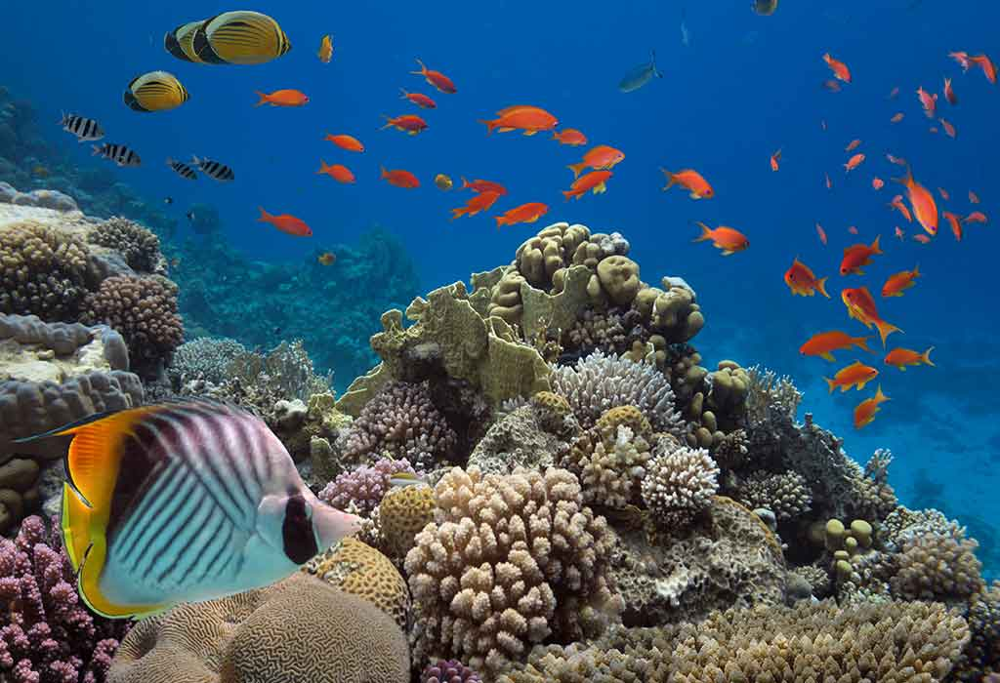
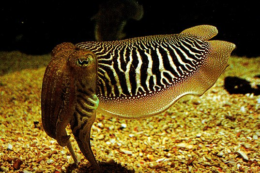
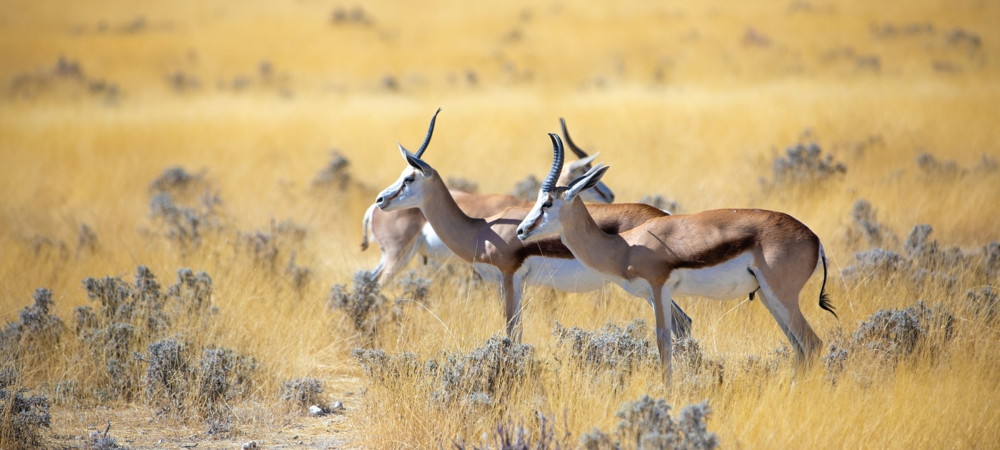
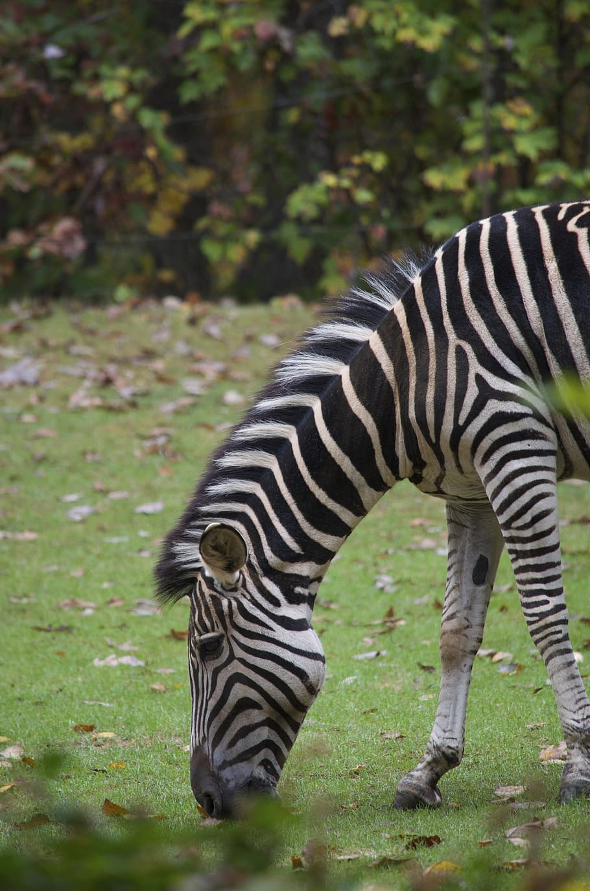
Explore
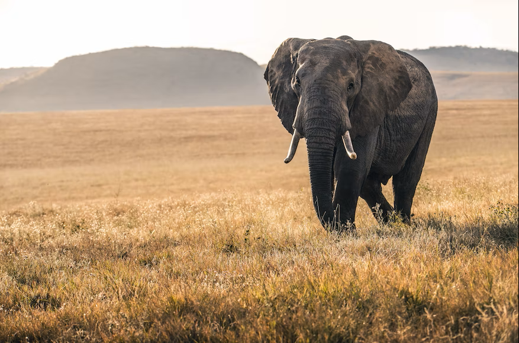
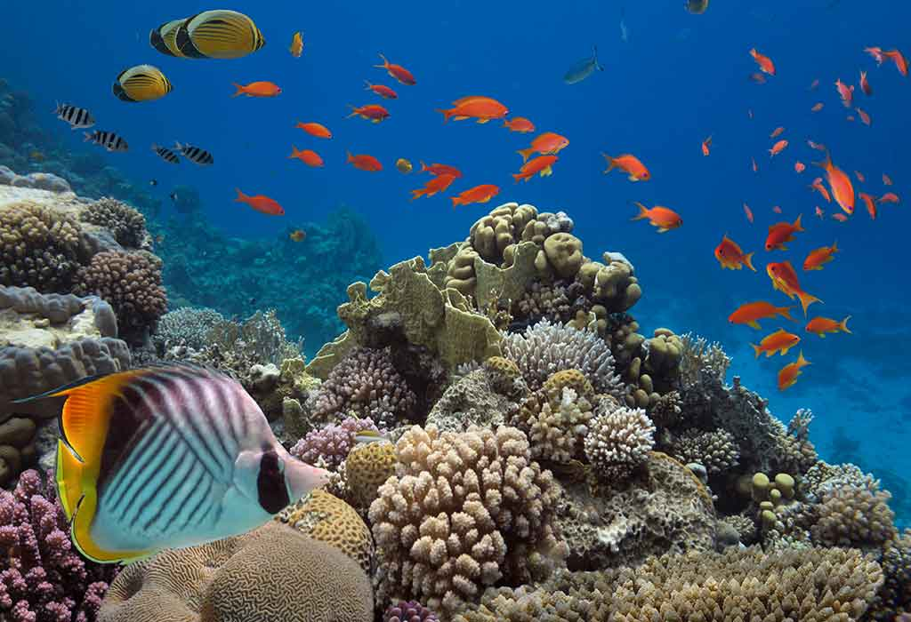
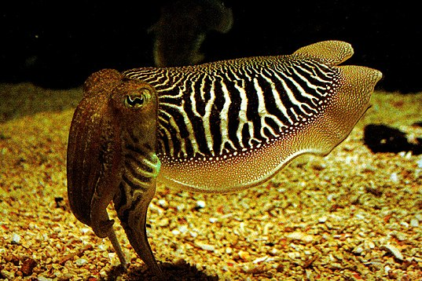
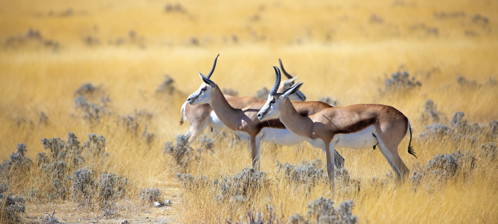
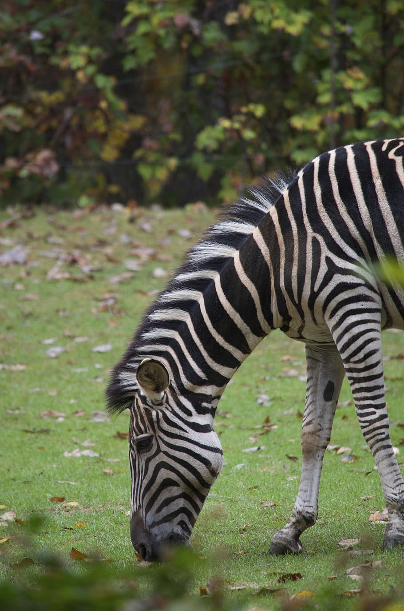
Wildlife refers to undomesticated animal species, but has come to include all organisms that grow or live wild in an area without being introduced by humans. Wildlife was also synonymous to game: those birds and mammals that were hunted for sport. Wildlife can be found in all ecosystems. Deserts, plains, grasslands, woodlands, forests, and other areas, including the most developed urban areas, all have distinct forms of wildlife. While the term in popular culture usually refers to animals that are untouched by human factors, most scientists agree that much wildlife is affected by human activities.Some wildlife threaten human safety, health, property, and quality of life. However, many wild animals, even the dangerous ones, have value to human beings. This value might be economic, educational, or emotional in nature. Humans have historically tended to separate civilization from wildlife in a number of ways, including the legal, social, and moral senses. Some animals, however, have adapted to suburban environments. This includes such animals as feral cats, dogs, mice, and rats. Some religions declare certain animals to be sacred, and in modern times, concern for the natural environment has provoked activists to protest against the exploitation of wildlife for human benefit or entertainment. Global wildlife populations have decreased by 68% since 1970 as a result of human activity, particularly overconsumption, population growth, and intensive farming, according to a 2020 World Wildlife Fund's Living Planet Report and the Zoological Society of London's Living Planet Index measure, which is further evidence that humans have unleashed a sixth mass extinction event. According to CITES, it has been estimated that annually the international wildlife trade amounts to billions of dollars and it affects hundreds of millions of animal and plant specimen
Terrestrial animals are animals that live predominantly or entirely on land (e.g. cats, dogs, ants, spiders), as compared with aquatic animals, which live predominantly or entirely in the water (e.g. fish, lobsters, octopuses), and amphibians, which rely on a combination of aquatic and terrestrial habitats (e.g. frogs and newts). Some groups of insects are terrestrial, such as ants, butterflies, earwigs, cockroaches, grasshoppers and many others, while other groups are partially aquatic, such as mosquitoes and dragonflies, which pass their larval stages in water. Terrestrial animals tend to be more developed and intelligent than aquatic animals.Humans have historically tended to separate civilization from wildlife in a number of ways, including the legal, social, and moral senses. Some animals, however, have adapted to suburban environments. This includes such animals as feral cats, dogs, mice, and rats. Some religions declare certain animals to be sacred, and in modern times, concern for the natural environment has provoked activists to protest against the exploitation of wildlife for human benefit or entertainment.
Water animals are generally fish and insect species. Some fish live in fresh water, while others live in salt
water. In addition, some crab and turtle species also live in the water. There are some birds that use the
sea to hunt among the aquatic animals. Although other aquatic creatures are also found, fish use most of the
water. Some mammals also live in the water. Seal and whale are at the head of these animals.
Fresh water creates a hypotonic environment for aquatic organisms. This is problematic for some
organisms with pervious skins or with gill membranes, whose cell membranes may burst if excess water is not
excreted. Some protists accomplish this using contractile vacuoles, while freshwater fish excrete excess
water via the kidney.Although most aquatic organisms have a limited ability to regulate their osmotic
balance and therefore can only live within a narrow range of salinity, diadromous fish have the ability to
migrate between fresh water and saline water bodies. During these migrations they undergo changes to adapt
to the surroundings of the changed salinities; these processes are hormonally controlled. The European eel
(Anguilla anguilla) uses the hormone prolactin, while in salmon (Salmo salar) the hormone cortisol plays a
key role during this process.
Importance for Environment : Aquatic animals play an important role for the environment as well
as
human's daily usage. The importance of aquatic animals comes from the fact that they are organisms that
provide humans with sources such as food, medicine, energy shelter, and raw materials that are used for
daily life.
Each aquatic species plays a different role to help us make every day easier, healthier, and also more
productive. They also help with the atmospheric pressure and global climate change.